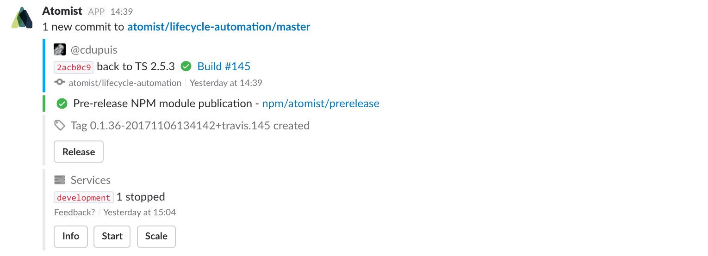

Chat Messages
Atomist supports sending rich, actionable and updatable Slack messages. Messages can be sent by an event handler or a command handler.
- Rich messages take full advantage of Slack’s native message formatting capabilities
- Actionable messages contain buttons and menus that trigger new commands on behalf of the user who clicked them
- Updatable messages can be rewritten with new content over time in response to new events and actions. This helps reduce the number of messages from the Atomist bot in a Slack channel.
Here’s an example of a message with different
Attachments and
Actions from the
Atomist open source community Slack workspace.

If you’re not familiar with the main concepts of Slack message formatting, you may want to read Slack’s documentation before you read the following sections.
MessageClient interface
Let’s take a look at the MessageClient interface.
export interface MessageClient { respond(msg: string | SlackMessage, options?: MessageOptions): Promise<any>; addressUsers(msg: string | SlackMessage, userNames: string | string[], options?: MessageOptions): Promise<any>; addressChannels(msg: string | SlackMessage, channelNames: string | string[], options?: MessageOptions): Promise<any>; ... }
The MessageClient provides access to methods for sending messages to Slack. It
allows you to address messages to users or channels by name or to simply send a
response message.
Generally the MessageClient is available from the HandlerContext parameter
to the handle method of command and event handlers.
Response messages
A response message is a message that is sent while handling a request to
run a certain command; they can therefore only be sent by command handlers.
Use the respond method to sending a response message. The Atomist platform takes
care of delivering the message into the right conversation in Slack.
The following example shows how to send a response message from a command handler.
export class HelloWorld implements HandleCommand { public handle(ctx: HandlerContext): Promise<HandlerResult> { return ctx.messageClient.respond("Hello from Atomist") .then(() => Success, failure); } }
User and channel messages
Address messages to users by calling the addressUsers method,
providing one or more names of Slack users. To send a message to one
or more channels, call the addressChannels method.
Note
If you want to send a direct message to a user in your Slack workspace,
use the addressUsers method with the user name of the recipient.
Here is an example of sending a simple message into the #general channel of
your Slack workspace:
export class HelloWorld implements HandleCommand { public handle(ctx: HandlerContext): Promise<HandlerResult> { return ctx.messageClient.addressChannels("Hello from Atomist", "general") .then(() => Success, failure); } }
In this example, you are sending the message only to the #general channel. It is
possible to send the same message into more than one channel by simply providing
an array of channel names to the addressChannels method. The same works for
addressUsers.
Formatting messages
In the previous section you saw how to address and send messages to Slack. This section covers formatting simple and complex Slack messages. It also demonstrates how to add buttons and menus to messages.
Simple messages
The addressUsers, addressChannels and respond methods accept a string
message as first argument. A simple string message can still have some basic
formatting.
Here are a couple of examples of simple messages:
| Code | Output |
|---|---|
messageClient.respond("This is a plain message"); |
This is a plan message |
messageClient.respond("This some *bold* text"); |
This is some bold text |
messageClient.respond("This some _italics_ text"); |
This is some italics text |
messageClient.respond("Some multiline\ntext"); |
Some multiline text |
More details on Slack text formatting can be found their the documentation.
Rich messages
For more complex, rich messages, Atomist provides the SlackMessage type as
part of the @atomist/slack-messages npm module.
The SlackMessage type can have Attachments and Actions. More details
on those concepts can be found in the Slack documentation.
In order to create a formatted Slack message, simply build an instance of
SlackMessage with all desired properties. Here is an example:
import * as slack from "@atomist/slack-messages"; const message: slack.SlackMessage = { attachments: [{ fallback: "How to filter by parent or ancestor directory with sysdig", author_name: "Janek Bogucki", author_link: "https://stackoverflow.com/users/148440/janek-bogucki", author_icon: "https://www.gravatar.com/avatar/5ccd05d83049593205406ac74eacb323?s=128&d=identicon&r=PG", title: "How to filter by parent or ancestor directory withsysdig", title_link: "https://stackoverflow.com/questions/41827350/how-to-filter-by-parent-or-ancestor-directory-with-sysdig", thumb_url: "https://slack-imgs.com/?c=1&o1=wi75.he75&url=https%3A%2F%2Fcdn.sstatic.net%2FSites%2Fstackoverflow%2Fimg%2Fapple-touch-icon%402.png%3Fv%3D73d79a89bded", footer: "file, sysdig", ts: 1485258115 }, { fallback: "Show more...", title: "Show more...", title_link: "http://stackoverflow.com/search?order=desc&sort=relevance&q=atomist" }] };
Once the SlackMessage is created you can send it via the MessageClient:
ctx.messageClient.respond(message);
This renders the following in Slack:

Adding message buttons
In the previous section you saw how rich messages can be created and posted to Slack. Now you’ll see how to turn this message into an actionable message by adding a button to it.
With Atomist, it’s easy to bind Slack action buttons to command handlers. Such a binding consists of three parts: the specification of the button as required by Slack, a reference to the command handler, and optional parameters that should be pre-populated when invoking the command.
The button specification is defined by Slack in the field guide. Here is an example of a button with a confirmation pop-up:
import { ButtonSpecification } from "@atomist/sdm"; const buttonSpec: ButtonSpecification = { text: "Search Again", confirm: { title: "Search Again?", text: "Do you really want to run the search again?", dismiss_text: "No", ok_text: "Yes" }, };
Adding message menus
Message menus are very similar to message buttons in the way they are created and
added to the message. The main difference is that menus are defined with a MenuSpecification
instead of a ButtonSpecification.
Besides the name of the menu, a MenuSpecification allows you to define menu options
and option groups.
See the following example:
import { MenuSpecification } from "@atomist/sdm"; const menuSpec: MenuSpecification = { text: "Issue Labels", options: [{ text: "Bug", value: "bug", }, { text: "Enhancement", value: "enhancement", }, { text: "Invalid", value: "invalid", }], }; const message: slack.SlackMessage = { attachments: [{ // ... actions: [ menuForCommand(menuSpec, handler, "label"), ], }], };
To create the menu, menuForCommand is called with the menu details, the reference
to the command handler and the name of the parameter on the command handler that
the selected value of the menu should be bound to; in this example, the value of
the option will be bound to the label parameter.
Message options
With MessageOptions actionable Slack message can be turned into updatable
messages; the MessageOptions interface provides important options to handle
and tune message updates and rewrites in Slack.
The following section describes the properties on the MessageOptions
interface and what they can be used for. See also: [APIDoc][message-options-apidoc]
For example:
const messageOptions = {
id: `build-summary/${owner}/${repo}/${sha}`, // sending another message with this ID will update this one
ts: Date.now(),
ttl: 60 * 60 * 1000, // update this message for up to one hour; after that, post anew
post: "always", // if this message didn't exist, create it
}
The id property uniquely identifies a message in a channel or
direct message. But it’s optional! Use it if you want to update
this message later. Otherwise we’ll generate something unique.
ts specifies the time in milliseconds of the message. If not set, it
defaults to the current time. This property is important to maintain correct
order of messages: the Atomist bot will not post a message with a ts
if there is a message for the same id but a later ts already in the channel
or direct message.
ttl or time-to-live defines the amount of time in milliseconds that a message
can be updated, after which a new instance of the message is posted to the bottom of the Slack stream.
So, when a message is received by the bot,
it compares the ts + ttl of the existing message with ts of the new
message; if ts + ttl is smaller, a new message ia posted to the bottom
of the Slack stream and the existing message is not rewritten. As long ts + ttl
is greater then ts of the new message, the existing message will be overwritten.
Lastly, the post property specifies whether a message should be posted only if
it is an update to a previously posted message with the same id. If
post === "always", the message is always posted as a new message and never rewrites
a previous message.
will never rewrite a previous message.
[message-options-apidoc]: https://atomist.github.io/automation-client/interfaces/lib_spi_message_messageclient.messageoptions.html (APIdoc for Message Options)